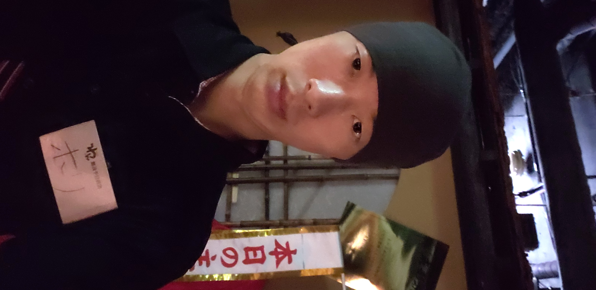
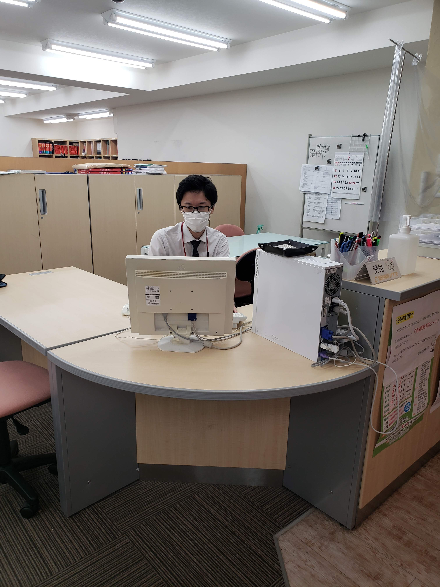

自己紹介
1992年生まれ
学生時代はとにかく数学が大好きで、数学だけは誰にも負けない自信があった。
京都産業大学の理学部を卒業後、飲食の世界へ。入社2年目で副店長、3年目で店長に就任し、2年間店舗の運営を任される。そこで数字を追うことの大切さを学び、後輩育成の難しさを感じ、お客様が何を求めているか考え実行することに注力。
その後、個別指導塾のマネージャーに転職。教室の事務・経理・営業を一人で任される。飲食時代の営業とは一味違く、成果を出すのに苦戦。しかし入社半年で必達講座数を達成。季節講習の売上目標110%超えで、教室開校から初の季節講習目標を達成した。
入社2年目にプログラミング教室QUREO講座がスタートする。大学時代に情報の授業を取っていたという理由で、QUREO関係の操作方法・質問窓口・プログラミング能力検定の応募促進など全て任される。
2020年5月プログラミングの独学開始。勉強していくうちにどんどん面白くなり、自分でアプリなどリリースしたいと思う。2021年1月退職後、ヒューマンアカデミーのAndroidプログラミングコースを修了。
趣味は格闘ゲーム。全国大会優勝経験あり。最近は全然出来ていないので現役は退いている。
現在就職活動中。
制作環境

java
ローカル開発環境でServlet,JSPを用いてWebサービスを開発することが出来ます。作成したWebサービスをAWSにデプロイするもデータベースとの連携がうまくいかず、現在はAWSの勉強をしています。

Androidアプリ開発
AndroidStudioを用いて、Androidアプリを開発しています。現状2作品をGooglePlayへアップしています。また過去に作ったアプリの解説動画をyoutubeにアップしています。

MySQL・SQLite
MySQLの基本的な操作の経験があります。またAndroidアプリ用にSQLiteの経験もあります。

HTML5,CSS3
HTML5,CSS3の基本的なマークアップ、スタイルの操作をすることが出来ます。

GitHub
GitHubの基本的な操作方法を習得し、バージョン管理をすることが出来ます。

JavaScript
JavaScriptの基礎文法を習得し、動的なUIなど作成することが出来ます。
私の強み
高いコミュニケーション能力

居酒屋店長時代に売上予算を達成するために培った能力。ただお客様の要求をそのまま返すのではなく、要求を細分化し、お客様が真に何を求めているのか考え、サービスを提供することが出来る。結果、常連さんの獲得につながる。
学習塾時代、親御さんに求められているのは志望校合格と成績アップなのでそこに全力で注力し、中3生全員第一志望合格させた。
豊富な営業の経験
飲食時代はほとんどが新規のお客様なので、また来てもらえるようなサービスの徹底。客単価をあげれるように、おすすめ商品の提案販売。日割り予算を達成するために深夜までキャッチに出て新規顧客を獲得する泥臭い営業も経験。
学習塾時代は、親御さん生徒さんとの継続的なつきあい方を経験。志望校合格をゴールに設定し、今後の定期テスト、模試の成績など明確な目標を共有し信頼を得る。目標に届かなかった場合は次回の課題と言い訳を準備。
圧倒的な後輩育成力

どれだけ自分が働いても限界はあるので、後輩社員・アルバイトの育成に力を注いだ。結果、飲食時代は自分が動かなくても回る店舗を実現し、人件費を削減。学習塾時代は講師が生徒を管理し、講師から現状報告を受ける形を作り、営業に使える時間を増やした。
取得資格
- Oracle Certified Java Programmer, Silver SE 11
- 中学校教諭一種免許状(数学)
- 高等学校教諭一種免許状(数学)